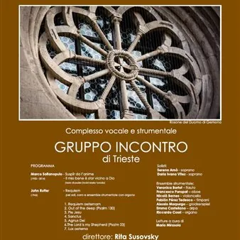

dom 25 ott · dalle 17:00
1976 - "L'Orcolat" - Requiem per ricordare e non dimenticare
Concerto per ricordare a cinquant’anni dal terribile evento tutte le vittime del terremoto del 6 maggio e dell’11 e 15 settembre 1976 in Friuli. In programma l’esecuzione di una pagina musicale di grande suggestione ed intensità espressiva: il Requiem di John Rutter, per soli…
 Indicazioni
Indicazioni
- Costi e prenotazioni
- Costo non indicato · Prenotazione non indicata
- Programma
- Programma da verificare. Apri la fonte ufficiale per orari e possibili aggiornamenti.
- In caso di maltempo
- Nessuna indicazione specifica pubblicata.
- Note
- Acquisito automaticamente dalla fonte.
L’EVENTO
Descrizione completa
Concerto per ricordare a cinquant’anni dal terribile evento tutte le vittime del terremoto del 6 maggio e dell’11 e 15 settembre 1976 in Friuli.
In programma l’esecuzione di una pagina musicale di grande suggestione ed intensità espressiva: il Requiem di John Rutter, per soli, coro ed ensemble strumentale. L’autore è uno dei più noti ed eseguiti compositori contemporanei di musica corale, orchestrale e strumentale a livello mondiale.
Il Requiem è una composizione scritta da Rutter nel 1985 e dedicata al figlio scomparso prematuramente. L'ensemble strumentale previsto nella partitura (flauto, oboe, glockenspiel, timpani, arpa, violoncello e organo) molto originale e poco usuale, riesce a coniugare perfettamente ed in maniera magistrale la parte corale con quella strumentale. L’ensemble è formato da giovani diplomati al Conservatorio “G. Tartini” di Trieste , mentre all’organo ci sarà Riccardo Cossi , organista titolare della Cattedrale di S. Giusto.
Prima del Requiem verranno proposti due brani del noto compositore triestino Marco Sofianopulo: Suspȋr da l’anime (in lingua friulana su testo di G. Costantini) e Il mio bene è star vicino a Dio (su testo di Padre David Maria Turoldo); brani che vogliono rappresentare un trait d’union ideale tra la cultura giuliana e quella friulana.
Saranno inoltre inserite, a cura di Mario Mirasola, delle letture di alcune poesie in lingua friulana scritte da diversi poeti friulani e tratte dal libro “L’Orculat - Poesiis furlanis sul tramolz”, ed ancora due preghiere di David Maria Turoldo.
La durata dell’evento è di circa 55 minuti.
Ingresso libero.
PROGRAMMA
Marco Sofianopulo (1952 – 2014)
Suspȋr da l’anime
Il mio bene è star vicino a Dio (testo di padre David Maria Turoldo)
John Rutter – Requiem (1945) per soli, coro e ensemble strumentale con organo
1. Requiem aeternam
2. Out of the deep (Psalm 130)
3. Pie Jesu
4. Sanctus
5. Agnus Dei
6.The Lord is my shepherd (Psalm 23)
7. Lux aeterna
Solisti: Serena Arnò – Daria Ivana Vitez - soprani
Ensemble strumentale:
Veronica Bortot– flauto
Francesco Poropat – oboe
Nicolò Bernes – violoncello
Fabiàn Pérez Tedesco - timpani
Alessio Morpurgo – glockenspiel
Emma Castellano – arpa
Riccardo Cossi – organo
Letture a cura di Mario Mirasola
IL PROGRAMMA
Programma e orari
Appuntamenti raccolti dalle fonti elencate. Dove manca un orario, non è ancora disponibile in questa scheda.
Programma pubblicato
- Dal 2026-10-25 al 2026-10-25
INFORMAZIONI UTILI
Prima di partire
- Controllare la fonte prima di partire.
ORGANIZZAZIONE